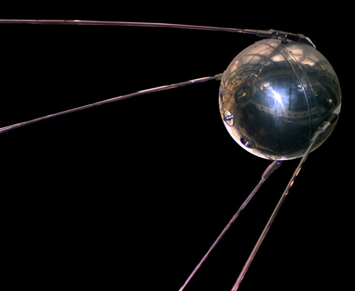

- Sputnik 1

Pierwszy sztuczny satelita Ziemi.
70 lat podboju kosmosu w jednym miejscu.
Kiedy w 1957 roku na orbicie pojawił się pierwszy sztuczny satelita, zaczęła się epoka, która do dziś zmienia świat. Na tej stronie prześledzisz drogę od pierwszych rakiet, przez lądowanie na Księżycu, aż po sondy i łaziki badające odległe planety. Każda podstrona to osobny rozdział tej historii.

Pierwszy sztuczny satelita Ziemi.